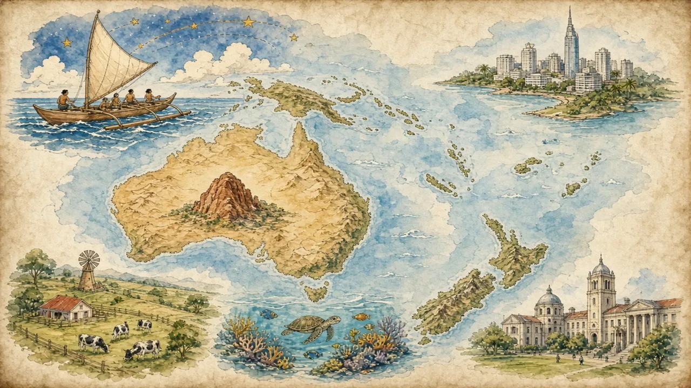

Australia, New Zealand, Papua New Guinea and thousands of Pacific islands: about 45 million people spread across a third of the planet's surface.
Oceania · Overview · Background
🌍 World map · ← Around the World: Oceania · 🌱 Easier version (A2) · Deadly Animals and Cuddly Koalas: The Real Wildlife Story →

Each new word is hidden in a sentence. Read it aloud and say what you think the bold word means from the rest of the sentence — then reveal it and see how close you were.
Read each part. After it, there's a quick comprehension check (try the questions from memory first), then one thing to discuss.
The Pacific Ocean covers roughly a third of the Earth's surface, and Oceania is the region of islands scattered across it. About 45 million people live there, but around 27 million of them are in Australia, over five million in New Zealand and roughly ten million in Papua New Guinea, which means that the many other island countries have only a few million people between them. Some, such as Tuvalu with around eleven thousand people, are among the smallest countries in the world. The region is usually divided into three cultural areas: Melanesia, which includes Papua New Guinea and Fiji; Micronesia; and Polynesia, which stretches from Hawaii to New Zealand, and from Samoa to Easter Island.
1. About how many people live in Oceania?
2. Which three cultural areas make up the Pacific?
1. Roughly 45 million.
2. Melanesia, Micronesia and Polynesia.
Aboriginal and Torres Strait Islander peoples have lived in Australia for at least 65,000 years, which makes theirs one of the oldest continuous cultures on Earth, and they spoke around 250 languages at the time British settlers arrived in 1788. Polynesian navigators, who read stars, ocean swells and bird flight, settled islands across the Pacific over some three thousand years, and reached New Zealand, which they called Aotearoa, around the thirteenth century. In New Zealand, the Treaty of Waitangi was signed in 1840 between the British Crown and Māori chiefs. European and Asian settlement then followed, and most Pacific countries became independent in the twentieth century, Samoa in 1962, Fiji in 1970 and Papua New Guinea in 1975.
1. How long have Aboriginal people lived in Australia?
2. When did Samoa become independent?
1. At least 65,000 years.
2. In 1962.
Today the differences are huge. Australia and New Zealand are wealthy countries in which nearly three in ten people were born overseas, and in which the vast majority live in cities, mostly near the coast. Papua New Guinea has more than eight hundred languages, the highest number of any country, and most of its people live in villages. Small island states depend on fishing, tourism and money sent home by relatives abroad. Despite the distance between them, Pacific countries cooperate through organisations such as the Pacific Islands Forum, and many people use the phrase “Blue Pacific” to describe a shared identity based on the ocean rather than on land.
1. How many languages does Papua New Guinea have?
2. Where do most people in Australia and New Zealand live?
1. More than eight hundred.
2. In cities, mostly near the coast.
A stereotype and the reality rarely match. This lesson's grammar gives you the structure to describe the difference.
Complete each sentence about this topic.
1. The Pacific covers a third of the Earth's surface. (roughly / hardly)
2. Papua New Guinea has eight hundred languages. (well over / hardly)
3. three in ten Australians were born overseas. (Nearly / Few)
1. roughly
2. well over
3. Nearly
1. the vast majority of people in Australia live in cities. (Roughly / Most of)
2. Tuvalu has eleven thousand people. (just over / just under)
3. Aboriginal people have lived in Australia for 65,000 years. (at least / at most)
1. Roughly (or Nearly)
2. just over (about)
3. at least
Hold on to this — you'll need it in the Speak tab.
“Oceania is Australia with some islands” is a map-making habit: the large land mass takes up the page, and the ocean seems empty. Pacific Islanders have long pointed out that their world is not empty but connected by water, and that the ocean has been a highway for thousands of years. A fair picture keeps several scales in view at once: ancient cultures and modern economies, large countries and tiny ones, and many languages and cultures that cannot be put under a single label.
This is the heart of the lesson — do all of it out loud. The timer is there to keep you going: fill the time with detail rather than escaping it.
Explain how Oceania is varied and connected, as if to a friend who thinks it is just Australia with some islands. Move through the arc: a region made mostly of ocean → very old and very new → diverse today.
Use today's grammar at least three times, and work in at least five key words (archipelago, atoll, indigenous, navigator, colony, settler, sovereign, endemic).
“Small countries should join larger ones to make themselves stronger.” Discuss.
Tell a story from your own world — work, family, the news — that connects to this topic. Stuck for an idea? Pick one of these and run with it:
🌍 World map · ← Around the World: Oceania · 🌱 Easier version (A2) · Deadly Animals and Cuddly Koalas: The Real Wildlife Story →